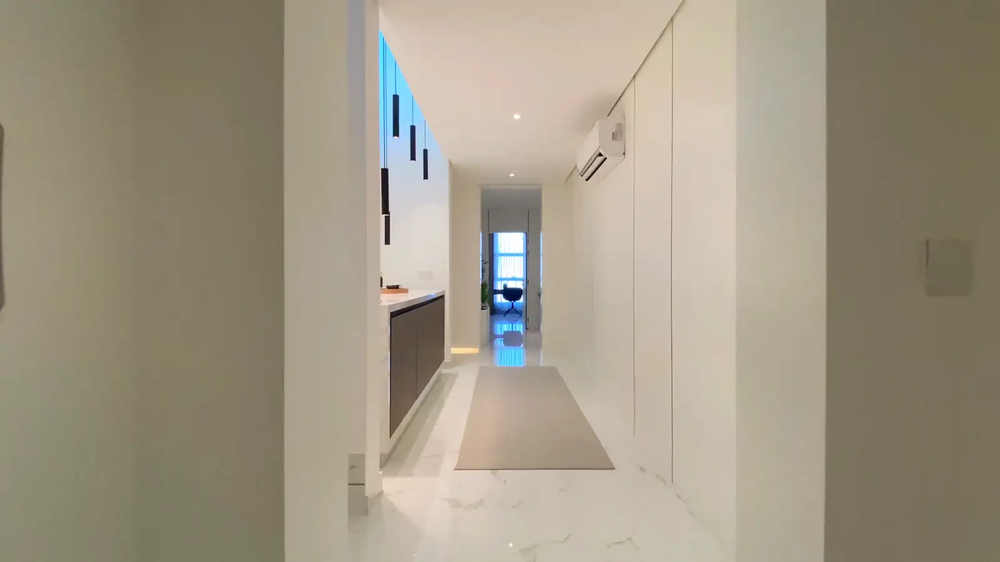

שבע דקות בבית אחד על הצוק. בלי טפסים, בלי הרשמה — רק אתם והאור.
הבית נבנה בשביל האור. אחר כך יצרנו את האור.
שלוש מנורות, כל אחת תוכננה לחלק אחר בבית. אותם חומרים, אותו איפוק — אבן, זכוכית מעושנת ופליז מושחר.
היכנסו לחדרים והדליקו את האור. כל מנורה, בכל חלל, לפני שתחליטו.
כניסה לחדר התצוגה